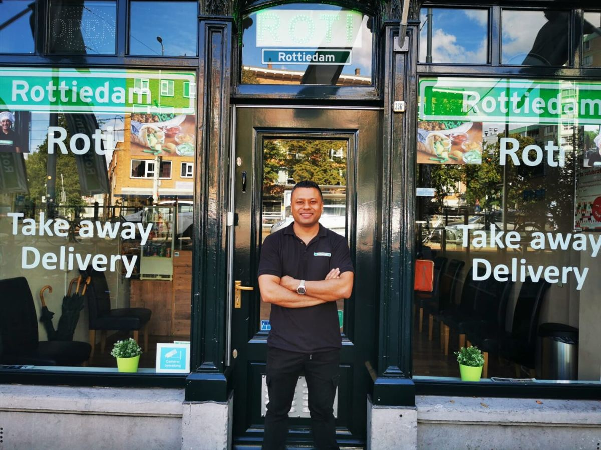

Koken is mijn passie
“Toen ik 11 jaar geleden uit Nepal emigreerde, begon ik onderaan als keukenassistent. Uiteindelijk werkte ik mezelf op tot kok en snel opende ik samen met mijn familie ons eerste restaurant. Nu kook ik met passie en veel liefde roti in mijn Rottiedam.”
Uttam chef & eigenaar sinds 2020
Benieuwd wat anderen ervan vinden? Lees de reviews op Facebook en Google.